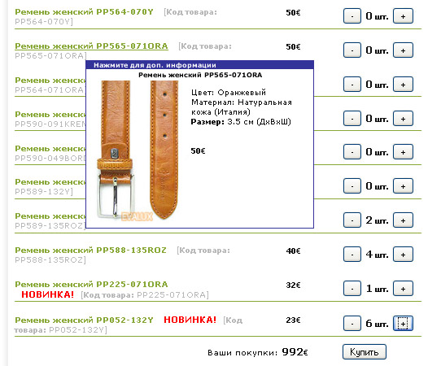

34. Вариант выдачи списка:Выберите вариант выдачи списка товаров, 1-12 -обычные виды, 13,14,15 - WEB2.0, 101-мультивыборНапример:Подробнее о том как выглядит каждый вариант смотрите здесь: Выбор вида списка